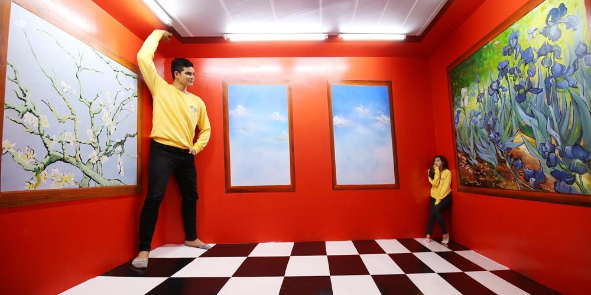
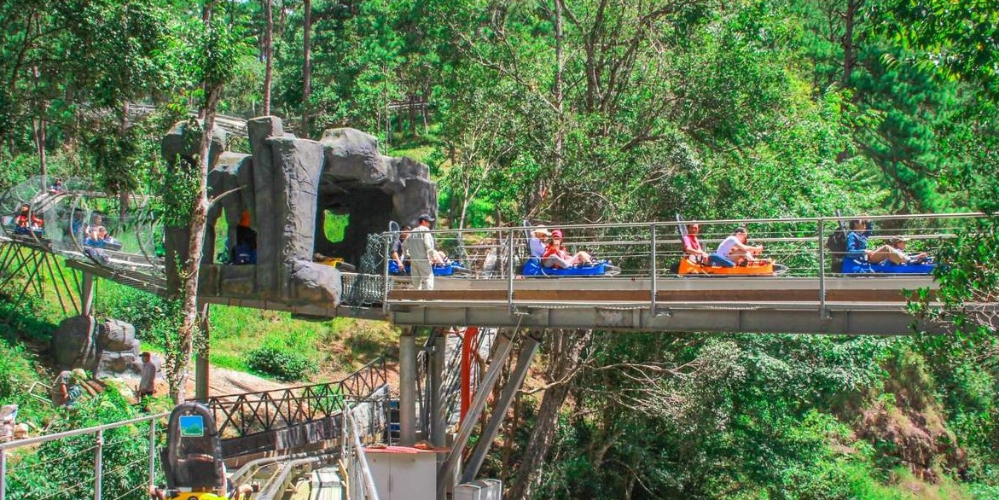

NHỮNG ĐIỂM THAM QUAN HẤP DẪN TẠI ĐÀ LẠT
Bạn đã quá quen với một Đà Lạt với chợ đêm, vườn chè xanh ngát hay các quán cà phê quen thuộc? Hãy thử tìm hiểu vùng đất này theo một cách khác, vẫn yên bình nhưng đầy mới lạ với các điểm đến dưới đây.
Danh sách điểm tham quan này có thể thỏa mãn những nhu cầu khó tính nhất, phù hợp với mọi lứa tuổi và mọi loại hình du lịch, từ nghỉ dưỡng cho đến khám phá.
-
Bảo tàng 3D Trickland
Bảo tàng 3D Trickland chỉ mới xuất hiện trong thời gian gần đây nhưng đã tạo nên một cơn sốt không hề nhỏ. Với các tác phẩm nghệ thuật 3D đa dạng đánh lừa thị giác, đây chính xác là một thánh địa sống ảo - nơi khách du lịch có thể hòa mình, sống trong trong thế giới tranh vẽ và cho ra lò những bức ảnh độc đáo.
• Giá vé: Từ 1.519.650 VND/người
• Địa chỉ: Khu du lịch thác Dalanta, QL20 Đèo Prenn, phường 3, thành phố Đà Lạt, Lâm Đồng

-
ZooDoo Đà Lạt
Mô hình sở thú kết hợp với quán cà phê có một không hai mà bạn chỉ có thể trải nghiệm ở ZooDoo Đà Lạt. Ở đây, du khách vừa được nhâm nhi ly cà phê đậm vị, vừa tham gia các hoạt động vui chơi. Đặc biệt, đừng quên bỏ lỡ việc cho thú ăn với các loại động vật như thỏ, gấu mèo, lạc đà,...
• Giá vé: Từ 90.000 VND/người
• Địa chỉ: Khu du lịch thác Dalanta, QL20 Đèo Prenn, phường 3, thành phố Đà Lạt, Lâm Đồng

-
Cáp treo Đà Lạt
Ngắm nhìn toàn cảnh thành phố và cảnh sắc núi rừng từ độ cao hàng trăm mét, dịch vụ cáp treo với mức giá cực bèo sẽ mang đến cho bạn một Đà Lạt rất khác, yên tĩnh, xanh mát và ít xô bồ vào mỗi mùa cao điểm.
Với chặng đường nối dài từ đồi Robin đến Thiền Viện Trúc Lâm, tại sao bạn không thử cùng một nửa của mình trải nghiệm không gian lãng mạn này?
• Giá vé: Từ 1.519.650 VND/người/vé
• Địa chỉ: Khu du lịch thác Dalanta, QL20 Đèo Prenn, phường 3, thành phố Đà Lạt, Lâm Đồng
CÁC TRÒ CHƠI VÀ HOẠT ĐỘNG THỂ THAO Ở ĐÀ LẠT
Nếu bạn yêu thích các trò chơi mạo hiểm và các hoạt động khám phá ngoài trời, đây là danh sách những điểm đến bạn không thể bỏ lỡ cho chuyến đi Đà Lạt sắp tới. Tại đây, các bạn trẻ có thể thỏa sức chinh phục thiên nhiên, thử thách giới hạn bản thân và giải tỏa những áp lực thường ngày
-
Xe trượt thác New Alpine
Sở hữu máng trượt 2,400m dài nhất Đông Nam Á, xe trượt thác New Alpine ngày càng thu hút đông đảo khách du lịch. Chậm rãi băng qua khu rừng thông qua cung đường trượt, bạn sẽ được sống giữa sự tĩnh lặng của núi đồi và lắng nghe thanh âm trong trẻo từ thác Dalanta yên bình.
• Giá vé: Từ 134.250 VND/người
• Địa chỉ: Khu du lịch thác Dalanta, QL20 Đèo Prenn, phường 3, thành phố Đà Lạt, Lâm Đồng

-
Đu dây mạo hiểm zipline
Tọa lạc tại đèo Prenn, khu vui chơi đặc biệt này sở hữu 80 trò chơi mạo hiểm lý thú, xếp hạng cấp độ khó từ 1 đến 7, đang cực kỳ phổ biến với giới trẻ hiện nay. Với đu dây zipline, bạn có thể vô tư vui chơi nhưng vẫn đảm bảo an toàn với hệ thống bảo hộ chuyên nghiệp.
Đồng thời, các vị phụ huynh cũng có thể đưa con mình đến đây, tham gia các trò chơi vận động thiết kế riêng dành cho các bạn nhỏ để rèn luyện sức bền và sự linh hoạt, khéo léo.
• Giá vé: Từ 244.998 VND/người
• Địa chỉ: QL20 Đèo Prenn, phường 3, thành phố Đà Lạt, Lâm Đồng